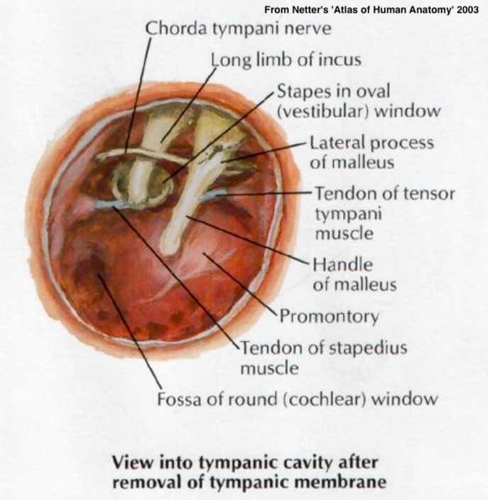
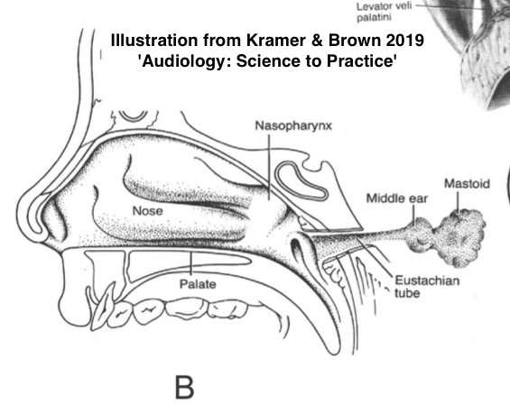
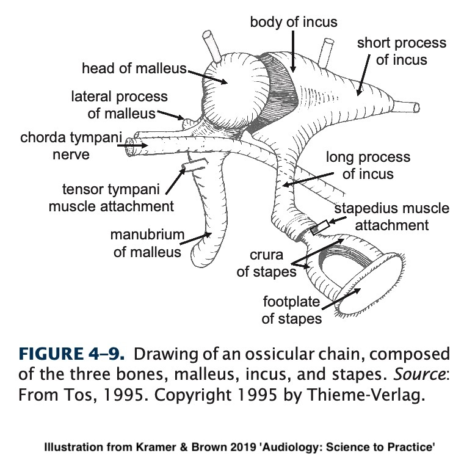

Will Styler - LIGN 113
The Middle Ear
The Vestibular System
The Cochlea




a.k.a ‘Auditory Tube’, ‘Pharyngotympanic tube’
Serve to regulate pressure inside the middle ear
Not always open!
Opened by the tensor and levator veli palatini
Otherwise, you’d hear your nasopharynx more!
Contains a bony and cartilaginous portion

Malleus (‘Hammer’)
Incus (‘Anvil’)
Stapes (‘Stirrup’)
Suspended by ligaments and muscles

TM is attached to the malleus
Malleus to incus to stapes
Stapes to the Oval window
Ligaments serve to support the ossicles within the middle ear

They promote the acoustic reflex
They amplify the acoustic signal
They match the impedance between (external) air and (cochlear) fluid
They protect the cochlea
Tightening the stapedius and tensor tympani muscles dampens the vibration of the ossicles
This happens in (delayed) response to loud noises and our own speech
Shrinking from TM to stapes increases force and improves transduction
Movement of bones matches the impedance
We wouldn’t want the TM to be on the side of the cochlea
Usually from head injury, TM perforation, or pressure
Massive ‘conductive’ hearing loss
Usually at the incus-stapes joint
An intact stapes usually means better outcomes
Better to injure the ossicles than cochlea!
They can heal and repair, often
Prosthetic ossicles are a thing!


Carries tongue sensation, among other things
One more reason you want your ear drums intact, thanks
The ossicular chain
The musculature involved in the acoustic reflex
The Eustachian tubes

Comprised of the bony cavities within the temporal bone
Contains the cochlea and the vestibular system
These structures are tiny


Dedicated to balance and orientation
Includes both semicircular canals
Filled with fluid and a method of detecting movement of that fluid


About 2 3/4 turns
Uncoiled it’d be ~35mm
We talk about the ‘base’ and ‘apex’ of the cochlea
There are three ‘cavities’ within the tube
The Scala Vestibuli
The Scala Media (also ‘cochlear duct’)
The Scala Tympani
The ‘tympani’ here refers to the round window

‘Perilymph’ in the Scalas Vestibuli and Tympani
‘Endolymph’ in the Scala Media
The fact that there are two different fluids is super important later on
You could swim from the oval window to the round window
The Scala media terminates at the helicotrema

This is the surface which sound is able to deflect
Stiffer at the base, more flexible at the apex
Different areas respond to different frequencies
This is called ‘tonotopic organization’
Pressure waves cause basilar membrane displacement


The Middle Ear gets sound from the TM to the Oval Window
The inner ear is a cavity within the temporal bone
It contains the vestibular loops and the cochlea
Cochlea is a spiraling wonderland of different cavities
The basilar membrane moves with sound
The Vibrations are picked up by the Organ of Corti!